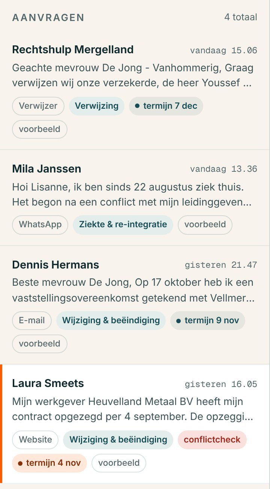
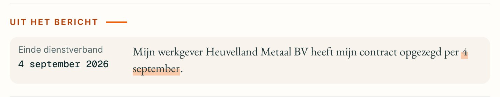
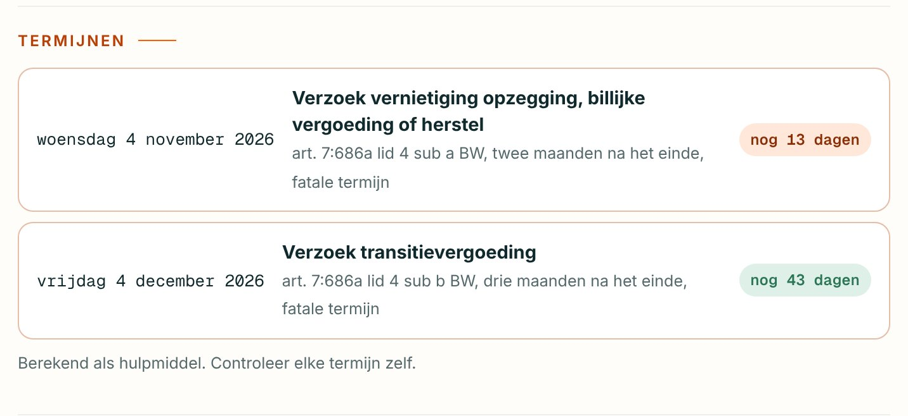
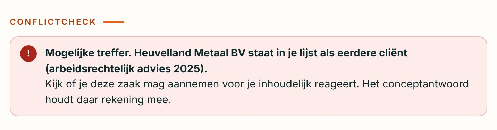
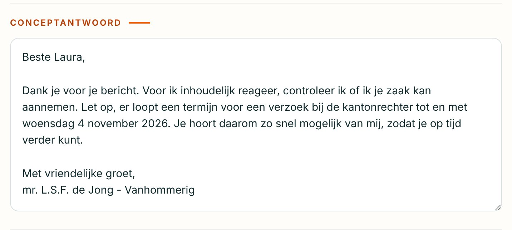
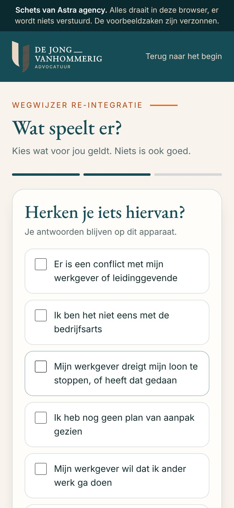
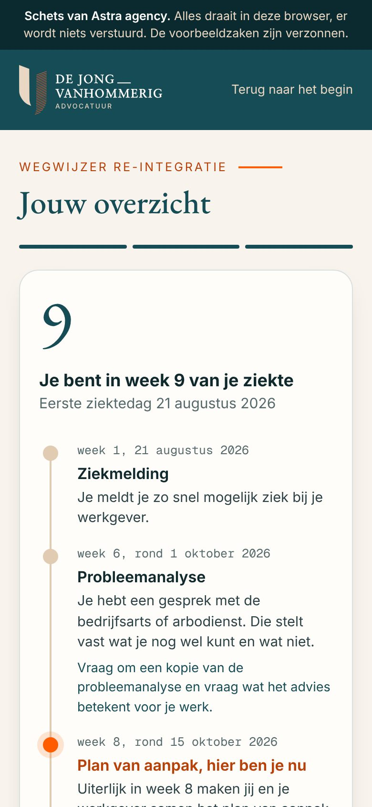
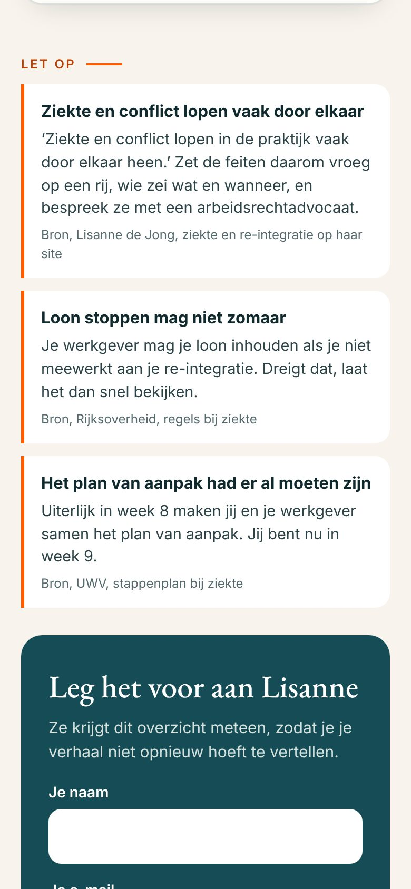
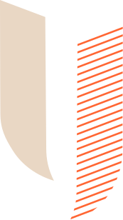

Two hours of eight
Clio, Legal Trends for Solo Law Firms 2023, a survey of 1,134 legal professionals in North America, as reported by LawNext and Canadian Lawyer.
Solo lawyers bill about two hours of an eight hour day, though they work as many hours as lawyers at larger firms. Clio links the gap to admin and to finding new clients.
In a one lawyer practice there's nobody to hand that to. Every new enquiry is read, sorted, checked and answered by you.
Four steps, and you only take the last
Follow one made up message from the sketch. Laura's employer has just ended her contract.
It lands in one list
Laura writes through your website. Her message joins the others in one list, already tagged with where it came from, its type of case and its first deadline.

The dates are found, the deadlines worked out
The day her contract ended is found and quoted from her own sentence. That gives two fatal deadlines, each with its article. One that falls on a weekend or holiday moves to the next working day, as the Algemene termijnenwet says.


Conflicts are checked
Her employer is on your own list as a former client, so it's flagged in red, in the list and on her card.

You decide
Because of the conflict, the draft holds back. It thanks her, says you're checking whether you can take the case, and tells her when the deadline runs out, so she can act in time either way. The engagement letter waits until you've decided. Without a conflict, the full reply and the letter with your own terms wait in your Outlook drafts.

The employee check your about page describes
Daarom ontwikkel ik naast mijn advocatenpraktijk ook praktische arbeidsrechtelijke kennis en hulpmiddelen. … Mijn eerste inhoudelijke focus daarbij ligt op ziekte en re-integratie.Lisanne de Jong - Vanhommerig, dejongvanhommerig.com/over-mij
So we built a first one. An employee enters the day they fell ill and sees which week they're in, UWV's step plan with its dates, and when it's worth calling a lawyer. One button sends you the whole picture.

One question per screen.

Where they stand, with UWV's dates.

What to watch, each with its source.
Built on UWV's own step plan, Rijksoverheid and the civil code. You'd read and approve every line before it goes live on your site.
NextTry both yourselfFive minutes, three things to try
- Open Laura SmeetsThe conflict check finds a former client on the other side, and the draft reply waits for you.
- Paste an old enquiryWith the names changed. Watch the dates, the deadlines and the draft appear. It stays in your browser.
- Fill in the employee checkAs if you'd been ill since August, then find it at the top of your desk.
Open the sketch
Try it now
Inside the EU, and nothing kept
n8n runs the steps, Claude reads, and your own Microsoft 365 keeps everything. You're the gate before anything leaves.
Claude runs on Amazon Bedrock in EU regions, in zero retention mode. AWS writes no request or answer to storage, and Anthropic doesn't see them.
Drafts, deadlines and case folders land in your own Outlook, calendar and OneDrive. The desk keeps no copy, and Zivver stays as it is.
Each date shows the sentence it came from, and each deadline its article. Nothing goes out before you've read it.
The NOvA recommends a DPIA, an AI policy and asking clients' consent. We write all three with you before a single real message goes through.
Why Amazon Bedrock, and not Claude's own API
Anthropic's own API offers US or worldwide processing today. Amazon Bedrock's EU profile serves Claude from EU regions such as Frankfurt, Paris and Stockholm. We pick a Claude model that runs in zero retention mode, and check that at setup.
Each NOvA recommendation, and how the desk meets it
Verifieer altijd de output … Gebruik uitsluitend tools met bronvermeldingEvery fact on a card sits next to the sentence it came from. Every deadline names its article. Nothing is sent before you've read it.
Voer geen vertrouwelijke of cliëntgegevens in publieke AI-modellen.No public chatbot. Claude runs on Amazon Bedrock under a business account, in an EU region, with zero data retention.
Vraag toestemming aan de cliënt voor AI-gebruik in het dossier.The engagement letter asks the client's consent for the AI step in plain words. Without a yes, it isn't used.
Voer een Data Protection Impact Assessment uitWe write the DPIA with you in week one, before a single real message goes through.
Weet waar data worden opgeslagen en verwerkt … Zorg dat input en output binnen de kantooromgeving blijven.One page that maps every data flow, country and supplier. What comes out lands in your own Outlook and OneDrive.
Stel een kantoorbreed AI-beleid op. Informeer cliënten over het AI-beleid.A short AI policy for your practice and a client text for your site, written with you in week one.
De advocaat blijft eindverantwoordelijk voor advies en rechtsbijstandYou're the gate. The desk drafts, you decide.
Hours back, measured in your own practice
Move the sliders to match your week.
The starting numbers are our guesses, not data. Put in yours.
You time five enquiries the way you handle them now.
The desk shows the same numbers from your mailbox, time to first reply, admin minutes and deadlines checked.
You decide on what you see. The proof comes from your practice, not from us.
Live in four weeks
n8n and Claude set up inside the EU and connected to your Outlook and OneDrive. The DPIA and AI policy written with you, your starting numbers logged.
Email and your contact form first. You approve every draft while we tune the cards to how you work.
On your site, every line read and approved by you.
The same numbers as week one. Then you decide what's next.
Client updates and invoices, WhatsApp, and a first read of case files.
Thirty minutes, with one of your own old enquiries
Send a time that suits you on LinkedIn. We'll run an old enquiry of yours through the desk with the names changed, answer every privacy question, and agree one fixed price before anything starts.
Astra plans and builds websites, apps and the systems around them. Astra and Amwisesa work as one team, Astra on strategy and project management, Amwisesa building, with one contact for you.
Built by Amwisesa, Astra's development partner, often through the brand's own agency.
We build AI workflows for brands like
Unilever, AXA, Pertamina.